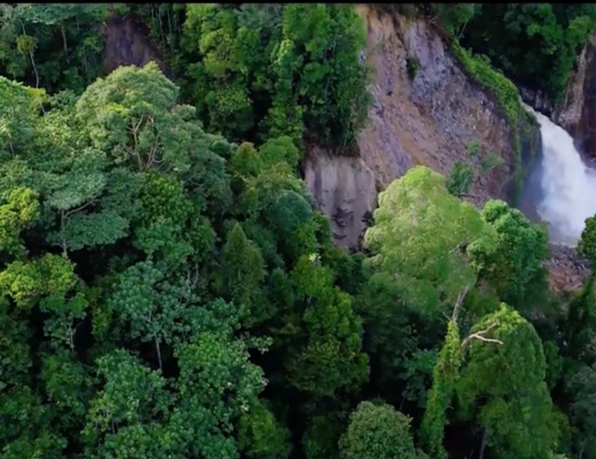

The Leuser Ecosystem: At the frontlines of extinction
You have likely heard of the Amazon or the Congo, but the lesser-known Leuser Ecosystem on the island of Sumatra, Indonesia, is just as biologically diverse, just as important to the continued survival of species, and just as important for our global climate.
The COVID-19 Pandemic and Wildlife Trade
We now know that COVID-19, the disease caused by the novel coronavirus that is causing tens of thousands to become ill or lose their lives, is spreading because of our collective exploitation of wildlife. Researchers and health authorities have linked the origins of the virus to the live food markets in China where wildlife is transported, caged in appalling conditions, , and slaughtered in front of paying customers.